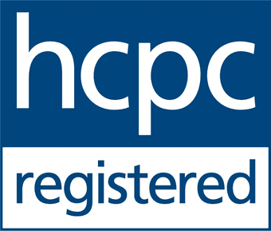
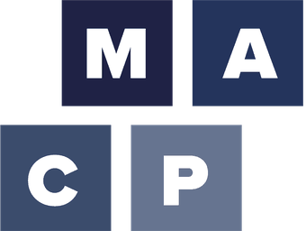
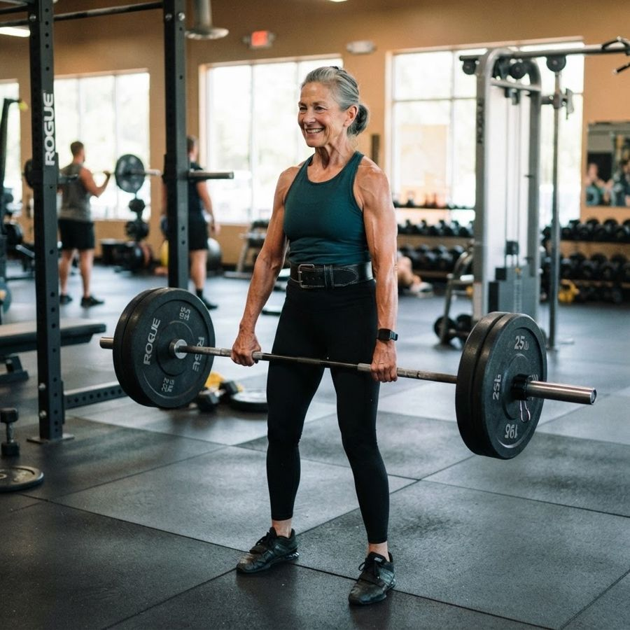
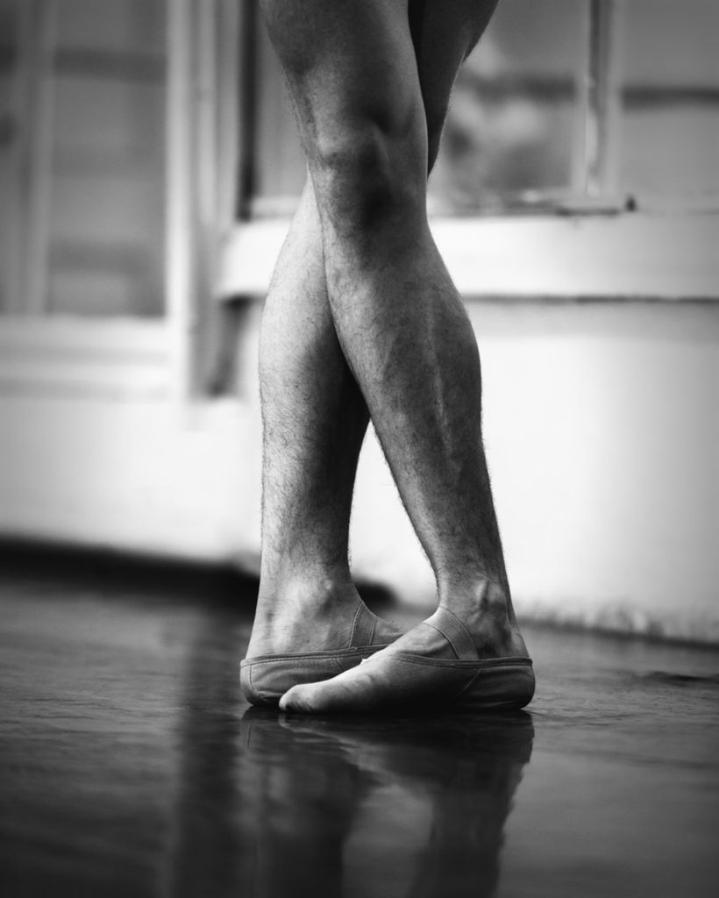
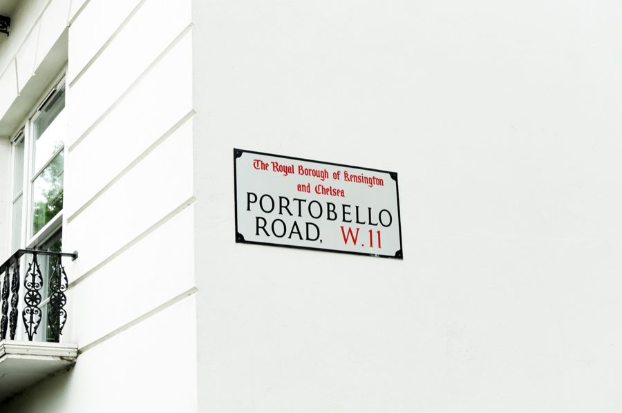
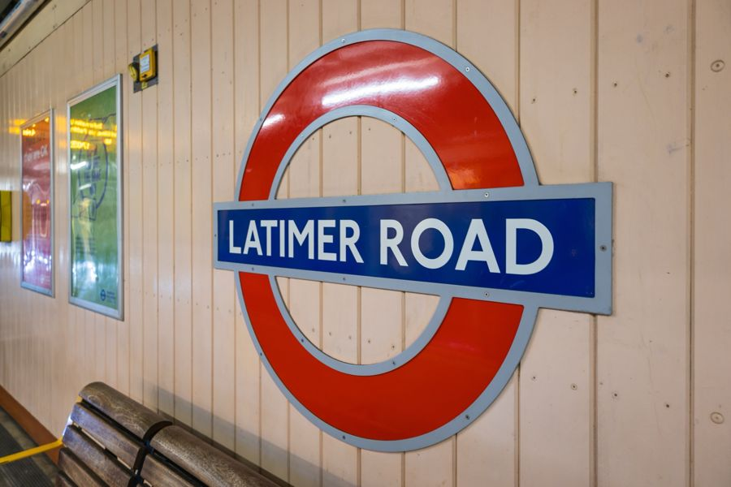

Musculoskeletal Physiotherapy
Expert assessment and treatment for pain and injury, with a special interest in the spine, shoulders and hypermobility.
Musculoskeletal physiotherapyAdvanced musculoskeletal physiotherapy in Notting Hill. Thirty years of spines, shoulders and injuries that have not settled, and the strength work that keeps them settled.


Who you will see
The dancing is where this started. I know what it is to depend on your body, to be injured, and to want a straight answer about when you will be back. It is why I listen first. A careful, unhurried history is the most important part of getting your diagnosis right, and the right diagnosis is what leads to the right treatment for you.
I qualified at King's College London in 1995, spent six years in the NHS, then founded The Practice Centre and ran it for twenty-three years. I am an Advanced Practice Physiotherapist and I see every patient myself, from the first assessment to the last, so there are no hand-offs and no rushing.
From the NHS and elite dance to private practice, a depth of knowledge across complex musculoskeletal problems.
No hand-offs. A tailored plan built around your goals, with the time to do it properly.
As a qualified Strength & Conditioning coach, I do not just relieve pain, I help you build the strength to stay well.
How I can help
Expert assessment and treatment for pain and injury, with a special interest in the spine, shoulders and hypermobility.
Musculoskeletal physiotherapy
Physiotherapy-led sessions that teach safe, effective training to recover, get stronger and perform.
Strength & conditioningSpecialist help for chronic pelvic pain, from a physiotherapist with real understanding and discretion.
Men's health physiotherapySpecial interests

Meet Tony
My training began not in a clinic but on stage. After an eleven-year career as a professional dancer, I retrained as a physiotherapist, graduating from King's College London in 1995, and brought that understanding of movement with me.
Six years in the NHS followed, working alongside specialist consultants in orthopaedics, neurology, spinal surgery and rheumatology. In 2003 I founded The Practice Centre in West London, and today I work one to one as a solo practitioner, recognised by the MACP as an Advanced Practice Physiotherapist.
Where to find me


Tony took the time to understand my problem properly, something no one else had done. I finally felt heard, and I got better.
Ready when you are
The first appointment is 45 to 60 minutes, and most of it is spent listening.